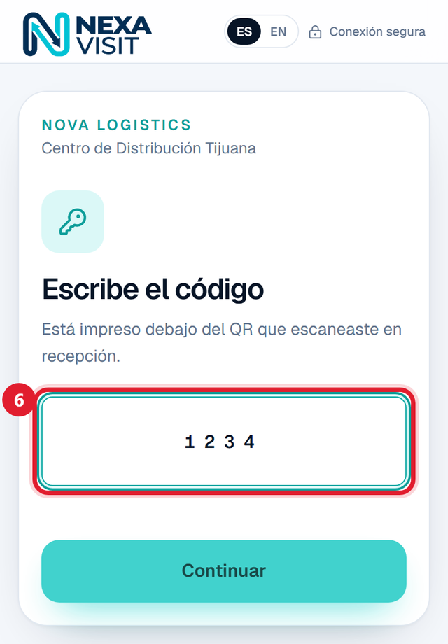
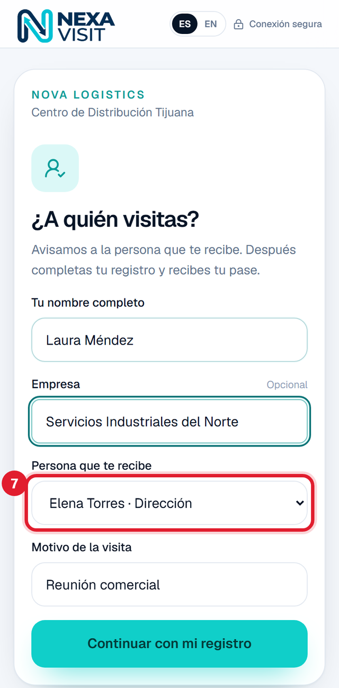

|
|
|
NOVEDADES · OCTUBRE 2026
Cinco mejoras que ya están en tu cuenta
Hola, [Nombre]:
Actualizamos NEXA VISIT con cinco mejoras que nos pidieron varias empresas. Ya están disponibles en tu cuenta y no tienes que instalar nada. En cada imagen marcamos en rojo dónde está el cambio.
- 1. Las identificaciones se conservan sin límite de tiempo (nueva opción predeterminada).
- 2. El visitante puede avisar que no trajo vehículo.
- 3. Un mismo QR sirve en todas tus sedes, y cada caseta valida que el pase sea de ahí.
- 4. Requisitos personalizados y anexos con título, texto y foto.
- 5. QR de recepción para registrar visitas sin cita.
Las imágenes son de una cuenta de demostración; en tu cuenta verás tus sedes, tu equipo y tus datos.
|
| 1 | Retención ilimitada de identificaciones |
Dónde: Configuración → Retención de identificaciones Agregamos la opción «Ilimitada» y ahora es la predeterminada. Tu cuenta ya está en esta opción, también para las identificaciones que se guardaron antes del cambio: ninguna se borra automáticamente. Si tu empresa prefiere un plazo, puedes elegir 7, 15, 30, 60 o 90 días. Al hacerlo, las identificaciones que ya rebasaron ese plazo se borran en la limpieza del día siguiente. Recomendación: revisa tu Aviso de privacidad, en la misma pantalla. Si dice que la identificación se elimina después de cierto plazo, actualízalo junto con tu área legal. Configuración → Retención de identificaciones | Dónde: registro del visitante, paso de vehículo Pasa seguido: la invitación pide el vehículo y la persona llega en taxi o a pie. Ahora el visitante puede marcar «No traje vehículo», aunque tu empresa tenga el vehículo como obligatorio. Ya no se le piden placas ni fotos, y en caseta aparece «Sin vehículo (lo declaró el visitante)». | Ejemplo: un proveedor recibe su invitación con vehículo obligatorio. Ese día llega en Uber, marca la casilla y obtiene su pase sin quedarse atorado en ese paso. |
Antes y después de marcar la casilla: las placas y fotos desaparecen | | 3 | Un QR para todas tus sedes |
Dónde: Visitas → Nueva invitación · Equipo · pantalla de caseta - Al crear una invitación aparece «QR válido en todas las sedes», encendido por defecto. Si la visita solo debe entrar por ciertas plantas, apágalo y elige las sedes. La sede principal siempre queda incluida.
- Cada guardia trabaja en una caseta. El administrador la asigna en Equipo → (guardia) → Caseta habitual, y el guardia puede cambiarla desde su teléfono si rota de sede.
- Si alguien presenta su QR en una sede que no está autorizada, la caseta lo rechaza con el aviso «No válido en esta sede».
- La bitácora registra por qué sede entró realmente la persona, y el aviso de llegada al anfitrión también lo dice.
| Ejemplo: un auditor visita Planta Norte en la mañana y Planta Sur en la tarde. Con una sola invitación y un solo QR entra a las dos. |
Las invitaciones que ya habías creado antes de esta actualización valen en todas tus sedes. Nueva invitación: encendido por defecto Apagado: eliges en qué sedes vale el QR Equipo → guardia → Caseta habitual En el teléfono del guardia: la caseta en la que está | | 4 | Requisitos personalizados y anexos |
Dónde: Configuración → Requisitos para el visitante · Nueva invitación - Da de alta los requisitos de tu empresa: un título, una descripción ya escrita y qué pides (foto, texto o ambos). Puedes hacerlos obligatorios y marcarlos para que se apliquen solos en cada invitación nueva.
- Al invitar, eliges qué requisitos aplican a esa visita.
- El visitante ve la descripción que escribiste y solo responde: sube la foto o escribe el dato.
- Si tienes activados los Anexos, el visitante también puede agregar anexos propios con título, texto y foto. Los tres son opcionales.
- Las respuestas y fotos quedan en el detalle de la visita.
| Ejemplo: «Póliza de responsabilidad civil» con foto y número de póliza, obligatorio para contratistas. «Equipo que ingresa» con número de serie y foto. «Alta en IMSS vigente» con foto del comprobante. |
Si editas un requisito, las invitaciones que ya enviaste conservan la versión original. Configuración → Requisitos para el visitante Agregar requisito: título, descripción, foto, texto y si es obligatorio Nueva invitación: eliges qué requisitos aplican Lo que ve el visitante al registrarse | | 5 | QR de recepción para visitas sin cita |
Dónde: Configuración → QR de recepción para visitas sin cita Para la persona que llega sin invitación. Generas un QR por sede, lo imprimes y lo colocas en la entrada. Cómo funciona para el visitante: - Escanea el QR con la cámara de su teléfono.
- Escribe el código de 4 dígitos impreso en la hoja.
- Elige a quién visita, escribe su nombre y el motivo, y completa el mismo registro que una invitación normal: identificación, vehículo, requisitos y aviso de privacidad.
- Recibe su QR de acceso, y el anfitrión recibe un correo avisando que llegó.
Para el administrador: - Sube el logo de tu empresa: aparece junto al de NEXA VISIT en la hoja imprimible.
- Imprimir hoja: genera la hoja con el QR y el código, lista para imprimir.
- Regenerar QR: la hoja anterior deja de funcionar de inmediato. Úsalo si la hoja se dañó o se compartió fuera de la sede.
- Regenerar código: el QR sigue igual y el código cambia. Hay que reimprimir la hoja.
- Pausar: deja de aceptar registros sin cambiar nada.
Seguridad: después de 5 intentos fallidos desde el mismo teléfono, el código se bloquea 15 minutos para ese teléfono. El pase de una visita sin cita vale solo en la sede donde se registró. Después de escribir el código, el visitante ve la lista de personas que reciben visitas (solo nombre y área). Te recomendamos cambiar el código de vez en cuando. Configuración: un QR por sede, con su código y acciones La hoja imprimible, con tu logo y el código debajo del QR  |  |
El visitante escribe el código y elige a quién visita |
|
Si quieres que te ayudemos a dar de alta tus requisitos o a imprimir los QR de tus sedes, responde a este correo y lo vemos contigo.
Saludos,
Equipo NEXA VISIT
|
Recibes este correo porque tu empresa usa NEXA VISIT para el control de visitantes.
|